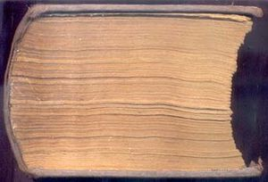
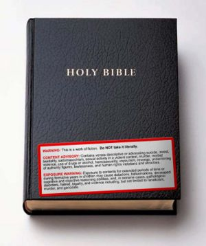
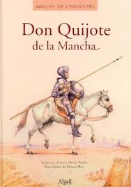

Tocho Infumable
 De: La Frikipedia, la enciclopedia extremadamente seria.
De: La Frikipedia, la enciclopedia extremadamente seria.
| De la serie Literatura para todos:
|
| Tocho Infumable
|
|
|
| Creador
|
Autores Infumados
|
| Época
|
Antiguamente
|
| Estilo
|
Inleíbles o Infumables
|
| Idiomas usados
|
Hebreo o Inglésico
|
| Estructura
|
Entramado de letras
|
| Dificultad
|
Pa leer: Mucha / Pa escribir: Más
|
| Notas
|
NO LEER TOCHOS INFUMABLES
|
 Libro no gordo de gordo,sino gordo de gördo
Titulo que se le da a cualquier obra de literatura, que contiene tantas páginas, es tan espeso, y anomalmente grande, que con solo verlo pierdes las ganas de leerlo. Solo pocas personas han podido leer un tocho infumable, pero tanto peso en la conciencia, les ha causado la muerte. (Literalmente).
Historia
Un día por la época de la Antigua Grecia, un tipo muy graciosillo empezó a escribir hojas y hojas y hojas y hojas y hojas en un libro y al cabo de 7 años, llegó a la mitad y dijo: Joder, me voy a comer palomitas y ahora sigo. Entonces 7 años después, lo terminó y vaya si lo terminó, aunque para nada ya que solo vendió 1 copia y tan gordo, pues joder eran 734849 € de los nuestros.
Cómo leerlo
Para leerlo,es necesario que tengas MUCHO tiempo libre. Si no lo tienes, mala potra, pero si lo tienes, ahí van:
Primero que nada: Aprender a leer, después comprar uno en una librería erótica, empieza a leerlo sin cortarte con los bordes del libro.
Por qué leerlo
La verdad es que un libraco para leer una historia emocionante...se te olvida llendo a una cuarta parte del libraco,y muchas más utilidades no tiene.
Características
- Tener miles de páginas.
- Ser tan gruesos como un ladrillo.
- Ser un potente somnífero.
- Si algún día los acabas te haces la típica pregunta: "¿Y todo ésto para qué?"
- Tener títulos raros.
- Que el autor suela ser Bosnio-Herzegopolaco
- Que el grosor del libro sea inversamente proporcional al tamaño de nuestra memoria
- Suelen utilizarse para la construcción o para sujetar las patas rotas de los muebles, o mantener el monitor a la cómoda altura de nuestro ojos.
- Que hayan llegado a nuestras manos porque algún amigo nos lo recomendó y que en realidad él nunca lo leyó y nos lo presta porque sabe que tampoco nosotros lo vamos a leer
 Ejemplo de tocho. Este es especialmente espeso.
Tochos famosos
Usos
- Sostener una pata coja de una silla.
- Adornar en la estantería.
- Como arma de destrucción masiva si se lee en voz alta.
- Como arma de combate cuerpo a cuerpo.
- Como posavasos.
- Como posabazos.
- Llevarlo bajo el brazo y parecer culto.
- Hacer mucho, mucho confeti.
- Alimentar a 867 familias o a una cabra (de todos es sabido que una cabra puede acabar con la biblia en 0,007 segundos)
- Decirle a los demás que lo estás leyendo y te gusta mucho(si dijeras que es malo podrías parecer superficial y poco cultivado).
- Como reposacabezas.
- Como pisapapeles tamaño XXL.
- Puedes usarlo para encubrir que en realidad estás leyendo el playtío.
- Como granja de ácaros.
- Si lo agujereas y le pones un fondo, como macetero versión económica.
- Aprender a leer (no es recomendable empezar por este tipo de libros, pero se puede hacer...).
- Cascanueces.
- Aplastar una mosca entre las páginas del medio para diseccionarla después.
- Atracar un establecimiento mediante el método del "Alibrizaje".
- Recortar todas las páginas, pintarlas y convertirlas en billetes.
- Recortar todas las páginas, blanquearlas y venderlas como papel reciclado.
- Recortar todas las páginas, blanquearlas y dársela a Konan, de la Akatsuki para que te haga muchos origami, ganarte su confianza, y conseguir infiltrarte en la Akatsuki para dominar el mundo mwahahahahaha!.
- Recortar todas las páginas, hacer tu mismo grullas de papel de origami, y ofrecer un transporte aéreo barato al público.
- Comerte el libro entero y cagar letras.
- Hacer rimas rimas. Ejemplo: Siete, por el culo se te mete, tocho, por el culo te la entocho
- La forma que tienen los retrasados mentales de escribir 8.
- Producidor de Diarreas Cerebrales
- Destruye-Hobbies
- Zapato
- Material de construcción
- Leer (Uso menos usado)
- Ponerlo sobre dos tablas, una a cada extremo, y romperlo con la técnica del puño del hierro
- Como escudo anti-balas/golpes/cates/galletas/etc.
- Puedes utilizarlo como martillo para arreglar la pata coja.
- Como arma de defensa propia.
- Para ocupar espacio y romper las estanterías con su elevado peso.
Sabias que...?
 Tocho infumable,de origen antiguo
- ...el Tocho Infumable es un arma de destruccion masiva?
- ...si lees unos en voz alta, todos lo que estan a tu alrededor moriran o caeran inconsientes?
- ...si usas un Tocho para arreglar una pata coja, probablemente, te falte la pata enterita? (Por que todos son inmensos)
- ...un Tocho tiene la medida justa para cualquier pata coja?
- ...un Tocho puede detener las balas?
- ...para levantar un Tocho, tienes que usar un montacargas?
- ...una vez, un maniaco que leia un Tocho, se le cayo? (Esta catastrofe fue conocida como el 11 de Septiembre)
- ...un Tocho tiene alrededor de 2.000 paginas?
- ...si matas a una mosca entre las paginas de un Tocho, nunca la encontraras?
- ...las bibliotecas con mas de diez Tochos, son centros de tortura?
- ...una vez, un niño metio un Tocho en su mochila? Perdio la columna.
- ...un Tocho es indestructible?
- ...solo se puede destruir quemandolo?
- ...antes de los escudos, usaban Tochos?
- ...y antes de las balas de cañon, tambien?
- ...los terremotos, son a causa de Tochos que se caen?
- ...un hombre construyo su casa de Tochos? (era indestructible)
- ...un Tocho causa la muerte instantanea. (sea leyendolo, o golpeando a alguien con el)
- ...antes del Señor de los Anillos, era el Señor de los Ladrillos?
- ...la casa del tercer cochinito, era de Tochos?
- ...un Tocho es la única arma homicida con la que se podría (con muchísima suerte y experiencia) detener una patada giratoria de chuck norris? Aunque no lo podrías matar.
- ...las bombas nucleares son cajas con 10 tochos apilados que al impactar contra la tierra albergan la destrucción masiva que elimina todo?

|
"En un lugar de... ese sitio que queda entre Madriz y la comunidad esa de ladrones... que tiene nombre algo asqueroso... bueno da igual... en un lugar del sitio ese de cuyo nombre no me acuerdo porque el alzheimer me ataca a lo bestia. Vivía... joder... vivía un tipo... pero ¿Cómo coño se llamaba? Joder... bueno vosotros ya me entendéis... pos el tío ese tenia un perro, un caballo, una lanza y estaba loco... loco... ¡¡¡Locooooooooooo!!! ¡¡¡Aaaaaaaaaaaaaaaah!!!
|

|
Cervantes, antes de volverse majareta del todo.
|
 Literatura Literatura
|
|
|
Autor(es):
- Doctor grijander
- Frikiman
- Aque
- Khazike Khashondo
- Yuri Kalashnikov
- Nadaquever
- Wwtawriter112
- Mai Self
- Mad Max
- Prototype
Frikipedia 2005-2016, Licencia
GFDL 1.2 - Extraído por FrikiLeaks